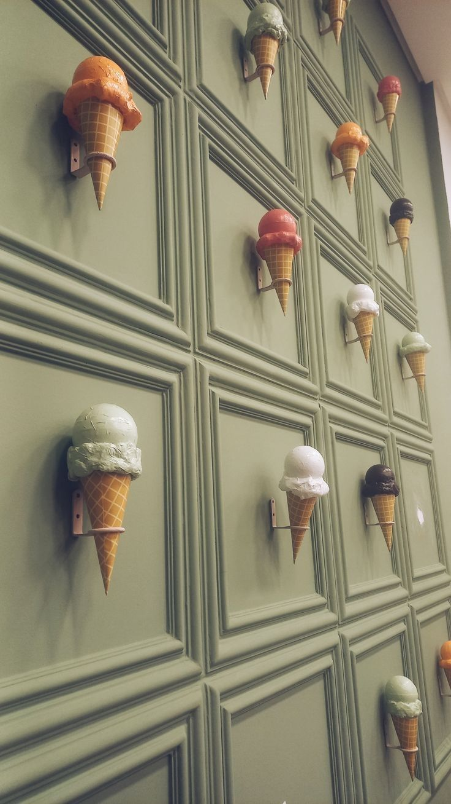
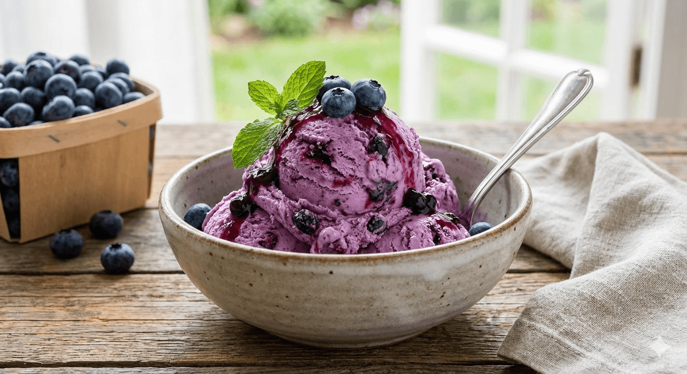
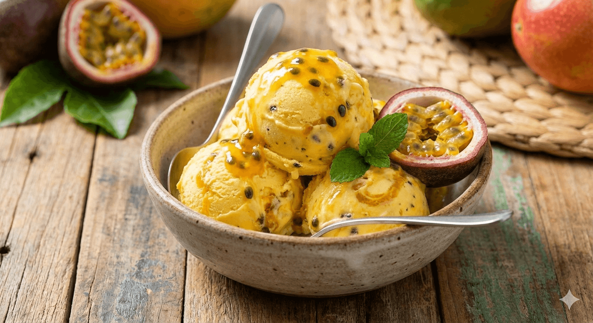
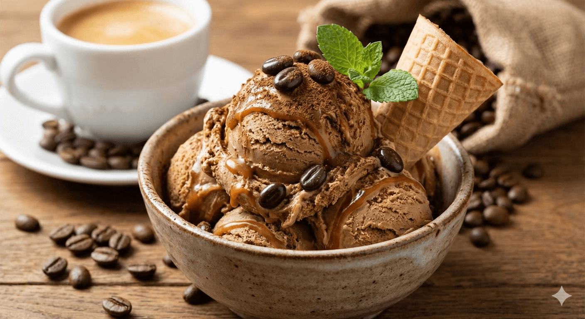

Bienvenidos a Gelato's 22
Todo comenzó en el verano de 1922, en un pequeño callejón de Florencia, Italia. Don Alessandro, un joven pastelero con una obsesión por la textura perfecta, decidió alejarse de las recetas industriales que empezaban a popularizarse. Su visión era simple pero radical: crear un helado que no dependiera del hielo picado, sino de una técnica de batido lento que mantuviera la cremosidad natural de la leche y las frutas frescas de la Toscana.
El nombre Gelato’s 22 nació casi por accidente. Alessandro utilizaba una antigua máquina manual que solo podía procesar 22 litros por tanda para garantizar la máxima frescura. Los vecinos, al ver el cartel de madera que indicaba la capacidad de la máquina, empezaron a decir: "Vamos por el del 22". Lo que empezó como una medida técnica se convirtió rápidamente en un sello de calidad y exclusividad en todo el barrio.A pesar de los desafíos económicos de la época, la heladería prosperó gracias a un ingrediente secreto: la avellana del Piamonte tostada artesanalmente. Mientras otras tiendas cerraban, Alessandro mantenía sus puertas abiertas, convirtiendo su local en un refugio donde la gente podía olvidar sus penas por unos minutos. La cifra "22" pasó de representar un volumen a simbolizar la resistencia y la alegría de un pueblo que encontraba consuelo en un barquillo bien servido. Hoy, un siglo después, Gelato’s 22 ha cruzado fronteras, manteniendo intacta esa filosofía artesanal. Aunque las máquinas modernas han reemplazado la manivela de Alessandro, cada tienda conserva una pequeña placa con el número original para recordar que la excelencia no se mide en masa, sino en el detalle de esos primeros 22 litros. La heladería sigue siendo, en esencia, un tributo a la paciencia y al sabor que solo el tiempo sabe madurar. En Gelato’s 22, la calidad no es una opción, sino el alma de cada una de nuestras recetas artesanales. Lo que nos hace diferentes es el respeto por el ingrediente real: seleccionamos frutas frescas de temporada, granos de café con el tostado perfecto y lácteos de primera para lograr esa textura sedosa y densa que solo un auténtico gelato puede ofrecer. A diferencia del helado industrial, nuestros procesos evitan el exceso de aire, permitiendo que sabores como el de nuestros arándanos silvestres o la vibrante maracuyá estallen en el paladar con una intensidad natural inigualable.

Cada tarrina es batida lentamente y con precisión, buscando el equilibrio exacto entre cremosidad y frescura para que no solo disfrutes de un postre, sino de una experiencia sensorial completa. No utilizamos conservantes ni saborizantes artificiales, porque creemos firmemente que la naturaleza ya nos regala los mejores matices para sorprenderte. Al final del día, nuestra mayor satisfacción es ver cómo un simple bocado se transforma en una sonrisa espontánea, recordándonos por qué amamos el arte de hacer helado. Elegirnos es apostar por la pasión, la maestría técnica y ese toque de magia que convierte un antojo cotidiano en un momento inolvidable.
PROMOCIONES
ARANDANOS
 7,99 $El helado de arándano se caracteriza por un sabor intenso, refrescante y agridulce, con un color morado o azulado natural característico. Su textura suele ser cremosa y suave. Es una opción popular para versiones saludables debido a su alto contenido en antioxidantes, vitaminas y sus propiedades antiinflamatorias.
MARACUYA
 7,99 $El helado de maracuyá es un postre tropical, refrescante y exótico, caracterizado por su intenso sabor agridulce y color amarillo vibrante. Elaborado comúnmente con pulpa natural de la fruta (pasión), azúcar y crema o yogur, ofrece una textura cremosa pero ligera, ideal para días calurosos.
COFFE
 7,99 $El helado de café es un postre sofisticado y cremoso que combina la intensidad aromática del café con una textura suave y mantecosa. Se elabora infusionando la base de crema con granos de café, espresso o café soluble, ofreciendo un sabor equilibrado entre lo dulce, amargo y tostado, ideal para los amantes de la cafeína.